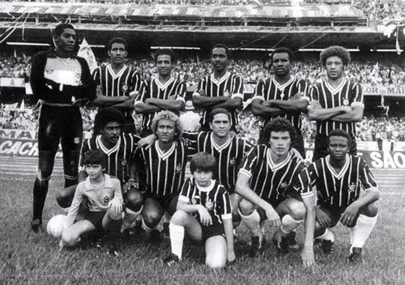
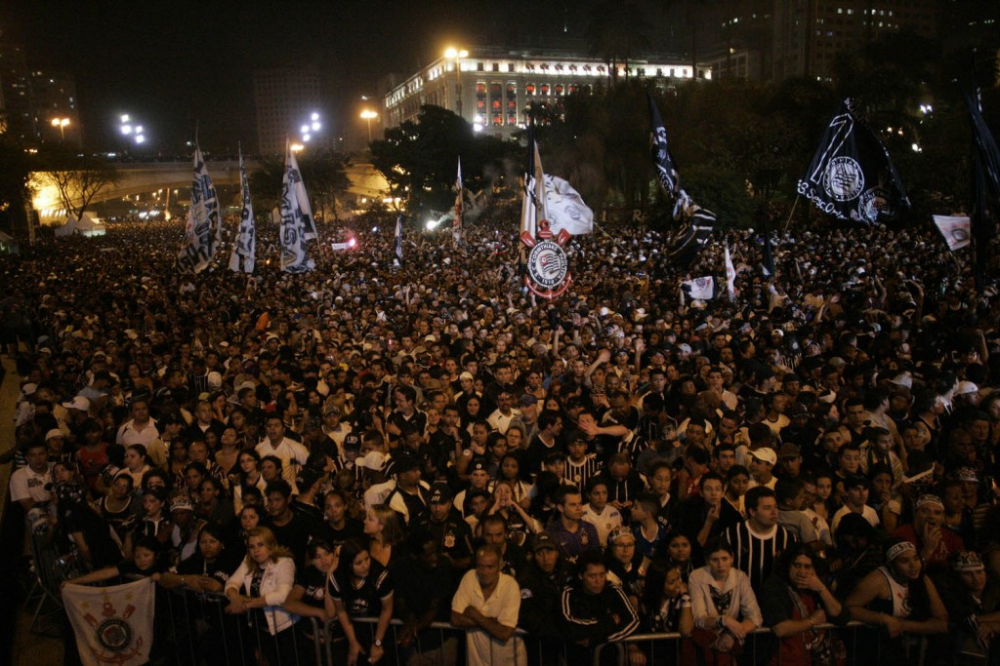

Às 20h30 do dia 1º de setembro, à luz de um lampião, na esquina das ruas José Paulino e Cônego Martins, no bairro do Bom Retiro, o grupo de operários formado por Anselmo Corrêa, Antônio Pereira, Carlos Silva, Joaquim Ambrósio e Raphael Perrone fundaram o Sport Club Corinthians Paulista. Com mais oito rapazes, foi formada a reunião dos primeiros integrantes e sócio fundadores do Timão, que teve seu nome inspirado na equipe inglesa Corinthian Football Club, que fazia excursão pelo Brasil. O presidente escolhido por eles foi o alfaiate Miguel Battaglia, que, já no primeiro momento, afirmou: “O Corinthians vai ser o time do povo e o povo é quem vai fazer o time”. Um terreno alugado na Rua José Paulino foi aplainado, virou campo e foi lá que, já no dia 14 de setembro, o primeiro treino foi realizado diante de uma plateia entusiasmada, que garantiu: “Este veio para ficar!”.
 1914 - O primeiro título
1914 - O primeiro título
Primeiro título do Sport Club Corinthians Paulista. Com 10 vitórias em 10 jogos disputados, o Timão marcou 37 gols e venceu a última partida por 3 a 0, contra o Lusitano, no Parque Antártica. O atacante Neco foi o artilheiro do torneio com 12 gols. O Alvinegro conquistou o Campeonato Paulista com uma rodada de antecedência. No dia 08 de novembro, a equipe derrotou o Campos Elyseos por 4 a 0 e sagrou-se campeã com a seguinte escalação: Aristides, Fúlvio e Casemiro González; Police, Bianco e César Nunes; Américo, Peres, Amílcar, Apparício e Neco.
1915 - Ano discretoO Alvinegro deixou a Liga Paulista de Futebol por conta de uma vaga desejada no campeonato da Associação Paulista de Esportes Atléticos, onde jogavam os grandes times da época. Porém, ficou de fora das duas competições.
 1919 - Torneio Início
1919 - Torneio Início
Campeão do primeiro Torneio Início da história do futebol de São Paulo. No mesmo ano, o Alvinegro conquistou a primeira vitória sobre o Palestra Itália em jogos de campeonato. No Parque Antártica, o ponta-direita Américo marcou o gol que definiu o resultado da partida: 1 a 0.
1920 - O artilheiro NecoO Corinthians foi bicampeão do Torneio Início. Com 24 gols, Neco foi novamente o artilheiro do Campeonato Paulista. O ataque alvinegro atingiu a marca de 75 gols em 17 jogos.
1921- Ficou no quaseNo Natal, o Timão precisava vencer o Palestra para ser campeão. O adversário, porém, levou a melhor e tirou o título do Alvinegro.
1922 - Centenário da IndependênciaO Corinthians foi campeão paulista no ano do Centenário da Independência do Brasil. O jogo, disputado em fevereiro do ano seguinte, terminou em 2 a 0 sobre o Paulistano no campo da Floresta.
 1926 - Parque São Jorge
1926 - Parque São Jorge
O Corinthians comprou o terreno do Parque São Jorge, cujo campo seria reformado e reinaugurado dois anos depois.
1927 - Ano de participaçõesA equipe alvinegra não levantou nenhuma taça no ano, mas participou de dois campeonatos paulistas diferentes: o da Liga dos Amadores de Futebol (LAF) e o da Associação Paulista de Esportes Atléticos (Apea).
1928 - A fazendinhaNo dia 22 de julho, o Parque São Jorge foi reinaugurado no empate em 2 a 2 contra o América-RJ. Com a ilustre defesa formada por Tuffy, Grané e Del Debbio, o clube voltou a conquistar o Paulista no final do ano.
 1930 - O campeão dos campeões
1930 - O campeão dos campeões
Em 1930, o Timão fechou a década com seis conquistas do Campeonato Paulista em 10 disputados. Foi o segundo tricampeonato alvinegro. Logo depois, o Corinthians venceu o Vasco, campeão carioca, por 3 a 2. Por conta desse resultado, passou a ser chamado de “Campeão dos Campeões”.
1931 - Venda de estrelasDevido ao ótimo desempenho do clube, quatro titulares da equipe tricampeã foram vendidos para a Lazio, da Itália. Sem Del Debbio, Filó, Rato e De Maria, o Alvinegro ficou enfraquecido e não passou do sexto lugar no Paulista.
 1934 - o futuro ídolo Teleco
1934 - o futuro ídolo Teleco
No final do ano, o Corinthians ganhou um grande reforço: Teleco. O centroavante paranaense viria a se tornar um dos maiores artilheiros do clube.
1935 - Não deuO Alvinegro brigou pelo título paulista até o fim com os reforços de Jaú, De Maria e Brandão, mas terminou em terceiro lugar. Teleco foi o artilheiro da competição com nove gols.
1938 - Nenhuma derrotaCom gol de Carlito, o alvinegro do Parque São Jorge empatou em 1 a 1 com o São Paulo e levou, de forma invicta, o bicampeonato paulista.
1939 - É tri!Pela terceira vez, o Coringão conquistou o tricampeonato estadual. Até hoje, nenhum clube venceu mais de três vezes seguidas o Campeonato Paulista.
1940 - PacaembuNo dia 28 de abril, o Timão inaugurou o estádio do Pacaembu, vencendo o Atlético-MG por 4 a 2.
 1942 - Dois campeonatos
1942 - Dois campeonatos
Naquele ano, o Timão conquistou dois títulos. O primeiro deles foi a I Taça Cidade de São Paulo, triangular com os três primeiros colocados do Paulista do ano anterior. Logo depois, venceu a Quinela de Ouro, disputada por Corinthians, Palestra, São Paulo, Flamengo e Fluminense.
1943 - Taça PaulistaAlém de ser bicampeão da Taça Paulista, a equipe fez novamente o artilheiro do estadual (Hércules, com 19 gols). Apesar disso, o título ficou com o São Paulo.
 1947 - Sempre na finalO Corinthians levou o título da Taça Cidade de São Paulo e o vice-campeonato no Paulistão.
1948 - Vitórias internacionaisAlém de vencer novamente a Taça Cidade de São Paulo, o clube conquistou grandes vitórias em amistosos internacionais, realizados no Brasil, contra o River Plate (ARG) e o Torino (ITA).
1949 - ìdolos contratadosApós ficar somente em quinto lugar no Campeonato Paulista, a equipe do Parque São Jorge passou por uma renovação com a contratação de futuros ídolos do time, como Cabeção, Idário, Roberto e Luizinho.
 1952 - Timão internacional
1952 - Timão internacional
Baltazar foi o artilheiro do Paulista, com 27 gols, e um dos destaques do bicampeonato. O Timão também fez sua primeira excursão à Europa, com 12 vitórias, três empates e apenas uma derrota em duelos realizados na Suécia, Turquia, Dinamarca e Finlândia.
1953 - Ano de glóriasO Coringão venceu pela segunda vez o Rio-São Paulo e levou também a Pequena Taça do Mundo, jogando contra Barcelona (ESP), Roma (ITA) e a Seleção de Caracas, na Venezuela.
1954 - IV centenárioO Alvinegro foi campeão de três competições naquele ano. Além de vencer o Torneio Rio-São Paulo e o Torneio Charles Miller, o time levou o caneco do Paulista. Ano do quarto centenário desde a fundação da cidade de São Paulo, o campeonato de 1954 era muito desejado por todos os clubes. O Corinthians o conquistou tendo em seu último jogo a seguinte escalação: Gilmar, Rafael, Goiano, Homero, Idário, Alan, Nonô, Roberto, Simão, Luizinho e Cláudio.
 1958 - Timão no Mundial
1958 - Timão no Mundial
Além de ter vencido o Troféu Charles Miller e o Torneio Brasília, o clube do Parque São Jorge teve grande importância no primeiro título da Seleção Brasileira da Copa do Mundo. Na Suécia, o goleiro Gilmar e o lateral esquerdo Oreco representaram o país e o Corinthians na conquista inédita.
1959 - InesquecívelVicente Matheus foi eleito presidente do Sport Club Corinthians Paulista. Ficou no Timão durante oito mandatos.
1960 - Sem consquistasO Timão contratou Almir, o “Pelé Branco”, pela quantia recorde de 8 milhões de cruzeiros. Mas a equipe não foi tão bem no Paulista e ficou somente com o terceiro lugar.
 1964 - Luta até o fim
1964 - Luta até o fim
Com a volta do ídolo Luizinho, o Timão lutou pelo título estadual até o fim, mas não levou.
1965 - RivellinoCom Rivellino na equipe, o Timão venceu o Torneio Pentagonal do Recife. Além disso, tornou-se o primeiro clube a vestir a camisa da Selecão no exterior, mas saiu derrotado pelo Arsenal por 2 a 0 em Londres.
1966 - Rio-São Paulo divididoO Corinthians foi campeão do Torneio Rio-São Paulo ao lado de Botafogo, Santos e Vasco por falta de datas para disputar os desempates. Naquele ano, o clube havia contratado Ditão, Nair e Garrincha, que formavam um time fortíssimo.
1969 - Ano tirsteCom o falecimento do lateral Lidu e do ponta Eduardo, o Timão perdeu a liderança do Paulista e não conquistou a competição.
1970 - Corinthians é BrasilNaquele ano, o Corinthians contava com três jogadores da Seleção Brasileira: o goleiro Ado, o meia Rivellino e o lateral Zé Maria. Foi em 70 que o Brasil conquistou o tricampeonato Mundial.
1971 - O primeiro BrasileirãoNo primeiro Campeonato Brasileiro da história, o Alvinegro dominou a primeira fase e foi líder, mas não teve um bom desempenho no final da competição.
1975 - Desempenho baixoBasílio e Cesar Maluco foram os reforços da temporada, mas o Alvinegro ficou apenas com o quarto lugar no estadual e em sexto no nacional.
1976 - Invasão CorinthianaCalcula-se que cerca de 80 mil corinthianos tenham viajado até o Rio de Janeiro para assistir ao jogo em que o Corinthians empatou com o Fluminense por 1 a 1, ganhou nos pênaltis (4 a 1) e classificou-se para a decisão do Campeonato Brasileiro de 1976 contra o Internacional. É, até hoje, um dos maiores deslocamentos pacíficos do homem no mundo.
1978 - Chegada de ídolosJá com Sócrates, Amaral e Biro-Biro, o Alvinegro ganhou o primeiro turno do Campeonato Paulista, mas não se consagrou campeão.
1979 - Mais um PaulistãoA decisão do Paulista foi disputada no ano seguinte, tendo o Corinthians como vencedor. Na semifinal, o clube do Parque São Jorge bateu o rival Palmeiras, considerado o melhor time do torneio.
1980 - Bateu na traveO Timão tinha tudo para levar o bicampeonato estadual, mas perdeu as semifinais do returno para a Ponte Preta.
1983 - Goleada históricaDepois de 30 anos, a equipe do Parque São Jorge foi bicampeã paulista novamente. Assim como no ano anterior, o clube venceu o São Paulo: 1 a 0 no primeiro jogo e 1 a 1 no segundo. Ainda em 83, o Corinthians aplicou a maior goleada de todos os tempos no Campeonato Brasileiro: 10 a 1 no Tiradentes-PI.
1984 - Sócrates na EuropaO tri paulista escapou na última rodada com a derrota para o Santos por 1 a 0. Sócrates foi vendido para a Fiorentina (ITA).
1985 - Não brilharamApesar de ter montado um time considerado excelente, a temporada não foi boa para o Corinthians, que não chegou às semifinais nem no Brasileiro nem no Paulista.
 1989 - Neto neles!
1989 - Neto neles!
O Corinthians não conquistou nenhum título, mas contratou o futuro ídolo Neto naquele ano.
1990 - Campeão brasileiroNo dia 16 de dezembro, o Timão levantou o troféu de campeão brasileiro pela primeira vez na história. Com 23 gols marcados em 25 partidas, a equipe do técnico Nelsinho Baptista venceu o São Paulo por 1 a 0 no último jogo, realizado no Morumbi. Neto marcou nove dos 23 gols, cinco em venenosas cobranças de falta. A escalação do time no dia da grande final foi: Ronaldo, Giba, Marcelo, Guinei e Jacenir; Márcio, Wilson Mano e Tupãzinho; Neto, Fabinho e Mauro.
1994 - Troféu BandeirantesA equipe do Parque São Jorge conquistou o Troféu Bandeirantes em cima do Santos, que garantiu vaga na Copa do Brasil do ano seguinte.
1995 - Campeão de tudoEm um ano espetacular, o Corinthians foi campeão da Copa São Paulo de Juniores, do Campeonato Paulista e da Copa do Brasil. Nesse último, o Alvinegro venceu oito das 10 partidas disputadas. Os jogos da final foram disputados com o Grêmio. Tanto no Pacaembu quanto no Olímpico, vitórias corinthianas: 2 a 1 em casa e 1 a 0 em Porto Alegre.
1996 - Até na EspanhaA equipe do Parque São Jorge faturou o troféu Ramón de Carranza, disputado em Cádiz, na Espanha.
 1999 - Dono do país de novo
1999 - Dono do país de novo
O Corinthians levou mais um Paulista e, pelo segundo ano consecutivo, o Brasileiro. Como havia acontecido no ano anterior, o Alvinegro dominou o nacional de ponta a ponta em 1999. Os resultados dos três jogos finais foram: Atlético-MG 3 x 2 Corinthians, Corinthians 2 x 0 Atlético-MG e Corinthians 0 x 0 Atlético-MG. A escalação na última partida foi: Dida, Índio, Márcio Costa, João Carlos e Kléber; Gilmar, Rincón, Vampeta e Ricardinho; Edílson e Marcelinho. Dessa vez, o técnico era Oswaldo de Oliveira. Luizão marcou 21 dos 61 gols que o Alvinegro fez durante as 29 rodadas.
2000 - O primeiro MundialO primeiro título mundial de clubes reconhecido pela Fifa veio com uma vitória nos pênaltis contra o Vasco depois do empate sem gols no tempo normal. A escalação da final foi: Dida, Índio, Adílson, Fábio Luciano e Kléber; Rincón, Vampeta, Ricardinho e Marcelinho; Edílson e Luizão. O Alvinegro fez seis gols em quatro jogos disputados. O segundo tento de Edílson no empate em 2 a 2 contra o Real Madrid é considerado um dos mais marcantes da história corinthiana.
2003 - Título sobre o rivalCom duas vitórias por 3 a 2 sobre o São Paulo, o Coringão levou o Campeonato Paulista mais uma vez. Rogério, Fábio Luciano e Gil marcaram no primeiro duelo. Na partida final, Liédson e Jorge Wágner (2) balançaram as redes para delírio da Fiel. O clube também aplicou uma goleada histórica naquele ano: 6 a 1 em cima do Paysandu pelo Brasileirão.
2004 - Preparação para o tetraO Timão teve uma campanha discreta no Brasileiro, ficando apenas com o quinto lugar.
2005 - Campeão galáticoCom um elenco de estrelas, o Corinthians conquistou o tetracampeonato brasileiro. Sob o comando do atacante argentino Carlitos Tevez, que marcou 20 gols no torneio, o clube venceu 24 partidas e empatou nove, mesmo número de derrotas. Um dos duelos mais memoráveis foi o 7 a 1 em cima do rival Santos. A equipe do técnico Antônio Lopes marcou 87 gols e sofreu 29. A escalação da última partida foi: Fábio Costa, Marinho, Wendel, Coelho e Gustavo Nery; Marcelo Mattos, Rosinei, Bruno Octávio e Carlos Alberto; Nilmar e Tevez. O argentino ainda foi eleito o melhor jogador da competição.
 2009 - Ano fenomenal
2009 - Ano fenomenal
Um dos maiores ídolos do futebol de todos os tempos foi o principal nome daquele ano no Corinthians. Ronaldo, o Fenômeno, marcou o gol mais bonito de sua carreira no primeiro jogo da final do Paulistão contra o Santos. Com a vitória por 3 a 1, bastou um empate em 1 a 1 na volta para o Alvinegro levar o caneco de forma invicta. Dois meses depois, em julho, Timão venceu o Internacional em casa por 2 a 0 no primeiro duelo da final da Copa do Brasil. Em Porto Alegre, o resultado de 2 a 2 garantiu mais um título ao Coringão.
2011 - Pentacampeonato brasileiroEm um empate sem gols contra o seu maior rival, o Timão conquistou, pela quinta vez, o Campeonato Brasileiro. A campanha do Alvinegro foi de 21 vitórias, oito empates e nove derrotas. A equipe de 2011 ficou conhecida pela regularidade dentro e fora de casa, além de uma excelente defesa. Liédson foi o artilheiro corinthiano com 12 gols. A escalação no último jogo foi: Júlio César, Alessandro, Paulo André, Leandro Castán e Fábio Santos; Wallace, Paulinho e Alex; Willian, Jorge Henrique e Liédson. No mesmo ano, o estádio do Corinthians, em construção, foi nomeado oficialmente a sede da abertura da Copa do Mundo 2014.
2012 - O ano inesquecívelPela primeira vez na história, o Corinthians foi campeão da Libertadores. E, para ser perfeito, de forma invicta! Foram 22 gols marcados e apenas quatro sofridos em oito vitórias e seis empates. O atacante Emerson marcou os gols da vitória por 2 a 0 contra o Boca Juniors (ARG) no jogo de volta da grande final. A escalação da partida foi: Cássio, Alessandro, Chicão, Leandro Castán e Fábio Santos; Ralf, Paulinho, Danilo e Alex; Jorge Henrique e Emerson. O gol de cabeça Paulinho contra o Vasco, que levou o Corinthians às semifinais da Libertadores, já é considerado por muitos o mais marcante da história do clube. Além disso, o Timão conquistou a Copinha também de forma invicta e teve um atleta medalhista olímpico em Londres. O nadador Thiago Pereira ficou com a prata nos 400m medley. Em dezembro, o Bando de Loucos invadiu o Japão e viu o Corinthians conquistar o Mundial de Clubes da Fifa pela segunda vez. Guerrero marcou de cabeça e garantiu o título contra o Chelsea no ano que se tornou inesquecível para a Fiel Torcida.
 1911 - Fora de casa
1911 - Fora de casa
Primeiro jogo do Timão fora da cidade de São Paulo. Na manhã de 17 de setembro, vitória sobre a Ponte Preta em Campinas por 1 a 0.
1912 - Jogos na várzeaRegistro de jogos na várzea cujos resultados não foram encontrados. Os adversários foram Paulista, Concórdia, Botafogo, Minas Gerais, Maranhão e Vila Mariana.
1913 - Estreia no PaulistaPela primeira vez, o Corinthians participou do campeonato da Liga Paulista de Futebol. O Alvinegro terminou em quarto lugar entre cinco equipes.
 1916 - Campeão
1916 - Campeão
De volta ao campeonato da Liga Paulista de Futebol, o Timão foi novamente campeão com 100% de aproveitamento: nove vitórias em nove jogos. Apparício foi o artilheiro do torneio com sete gols.
1917 - Rivalidades antigasO Corinthians disputou pela primeira vez o Campeonato Paulista ao lado de seus maiores rivais na época. Terminou em quarto lugar, atrás do Paulistano (campeão), do Palestra Itália (vice) e do Santos (terceiro).
1918 - O primeiro estádioEm suas horas de folga, os jogadores alvinegros construíram o gramado do primeiro estádio oficial corinthiano. Nomeado como Ponte Grande, a casa do Timão ficava onde hoje é a Ponte das Bandeiras, na Marginal Tietê.
1923 - Bicampeonato PaulistaPela primeira vez, o clube foi bicampeão paulista. Líder do turno inicial, o time começou o segundo com seis pontos de vantagem e só precisaria vencer três dos sete jogos restantes para levar o caneco.
1924 - O primeiro triMantendo a hegemonia no estadual, o Alvinegro conquistou o primeiro tricampeonato paulista. A Revolução Tenentista fez o torneio ser interrompido, mas, na volta, o título foi garantido com uma vitória sobre o Paulistano por 1 a 0.
1925 - Por poucoO Timão quase chegou ao tetra. O Paulistano se retirou do campeonato, mas os resultados de seus jogos não foram descontados. Caso tivessem sido, o clube terminaria na frente do campeão A. A. São Bento.
 1929 - Mosqueteiro
1929 - Mosqueteiro
O Alvinegro foi bicampeão do Campeonato Paulista novamente e, dessa vez, com 100% de aproveitamento: sete vitórias em sete jogos. No mesmo ano, a equipe venceu sua primeira partida internacional. Na ocasião, o Corinthians venceu o Barracas (ARG) por 3 a 1 no Parque São Jorge. Apparício, Rato e Rodrigues marcaram os gols da virada. No dia seguinte, o jornalista Thomaz Mazzoni, do impresso A Gazeta, relatou a partida destacando a “fibra de mosqueteiro” demonstrada pelos jogadores. Nesse mesmo ano, a Gazeta criou diversos mascotes aos times e, consequentemente, atribuiu o Mosqueteiro ao Timão.
 1932 - Estadual fraco
1932 - Estadual fraco
Com uma campanha discreta, o Corinthians terminou o campeonato estadual em quarto lugar. Em meio à Revolução Constitucionalista, a competição foi disputada em somente um turno, vencido pelo Palestra.
1933 - Técnico do UruguaiO Timão contratou seu primeiro técnico de futebol remunerado, o uruguaio Pedro Mazzulo. A campanha no Paulista foi novamente o quarto lugar.
 1936 - Invicto
1936 - Invicto
Invicto! Durante o ano inteiro, o Corinthians não perdeu nenhum jogo. Foram 28 vitórias e três empates, incluindo as partidas amistosas. O Timão venceu o primeiro turno do Paulista, mas perdeu a final para o Palestra, campeão do returno, já em 1937.
1937 - Mais um PaulistãoNo campeonato estadual daquele ano, o clube do Parque São Jorge levou o caneco. O duelo mais marcante foi o da vitória sobre o Palestra por 1 a 0 na antepenúltima rodada, com gol de Teleco.
 1941 - Artilharia e título
1941 - Artilharia e título
Pela quinta vez, Teleco foi artilheiro do Paulistão. O atacante marcou 26 gols e foi um dos grandes nomes da conquista da competição. O Corinthians conquistou o campeonato com duas rodadas de antecedência ao derrotar o Santos por 3 a 2 na Vila Belmiro.
 1944 - Torneio Início
1944 - Torneio Início
Naquele ano, o Timão contratou o zagueiro Domingos da Guia, venceu o Torneio Início e ficou em terceiro lugar no Paulista.
1945 - O artilheiro ServílioApesar de não ter faturado nenhum título, o Coringão novamente foi dono do artilheiro do Paulista: Servílio, com 17 gols.
1946 - Chegou pertoMesmo com 18 vitórias e apenas duas derrotas em 20 jogos, o Alvinegro ficou com o segundo lugar no estadual.
 1950 - O primeiro Rio-São Paulo
1950 - O primeiro Rio-São Paulo
Com 20 gols em sete jogos, o Timão conquistou o primeiro Torneio Rio-São Paulo de sua história. O último jogo terminou no empate em 1 a 1 com o Botafogo no Pacaembu. A escalação do duelo foi Bino, Newton e Belfare; Idário, Touguinha e Hélio; Cláudio, Luizinho, Baltazar, Nelsinho e Noronha.
1951 - O ataque dos 100 golsApós 10 anos, o Alvinegro foi campeão paulista novamente. O ataque formado por Cláudio, Luizinho, Baltazar, Carbone e Mário fez 103 gols em apenas 30 jogos. No mesmo ano, o Corinthians disputou sua primeira partida fora do Brasil. No Torneio Internacional/Quadrangular de Montevidéu, o clube derrotou o Combinado Uruguaio por 4 a 1 no estádio de Montevidéu.
1955 - Em cima dos lusosCom uma vitória por 2 a 1 em cima do Benfica (POR) no Pacaembu, o Timão conquistou o Torneio Internacional Charles Miller.
1956 - Taça dos invictosPela primeira vez, o Corinthians levou a cobiçada Taça dos Invictos, por conta de seus 25 jogos sem derrota no Paulista. Foram 17 vitórias e oito empates. Apesar disso, o Alvinegro terminou o campeonato apenas na terceira posição.
1957 - Dono definitivoO Coringão ficou com o segundo lugar no Campeonato Paulista, mas tornou-se dono definitivo da Taça dos Invictos. Foram 35 jogos sem perder na competição, com 25 vitórias e 10 empates.
1961 - Campanha fracaCom uma campanha discreta, o Alvinegro terminou o Paulista na sexta posição.
1962 - I Taça São PauloNaquele ano, o clube foi campeão da I Taça São Paulo, torneio eliminatório envolvendo equipes de todas as divisões de SP.
1963 - Três comandantesO Corinthians foi comandado por três técnicos em 1963: Fleitas Solich, Rato e Del Debbio. Porém, foi somente o nono colocado entre os 16 participantes do Paulistão.
 1967 - Não foi longe
1967 - Não foi longe
Liderou a primeira fase do torneio Robertão, mas não teve bons resultados no quadrangular final.
1968 - A quebra do tabuCom gols de Paulo Borges e Flávio, o Coringão venceu o Santos por 2 a 0 e quebrou um tabu de 11 anos sem derrotar a equipe do litoral paulista. Na noite de 06 de março, a equipe alvinegra entrou no Pacaembu com a seguinte escalação: Diogo, Osvaldo Cunha, Ditão, Luís Carlos e Maciel; Édson Cegonha e Rivelino; Buião, Paulo Borges, Flávio e Eduardo.
1972 - Passou pertoSemifinalista no Brasileiro, o clube perdeu para o Botafogo a chance de decidir o título contra o Palmeiras.
1973 - Ano discretoCom o técnico “linha-dura” Yustrich, o time do Parque São Jorge teve uma campanha discreta no Paulista (quarto lugar) e no Brasileiro (12º lugar).
1974 - Final complicadaO Timão voltou a disputar o título paulista diretamente em um jogo após 17 anos. A derrota para o Palmeiras na decisão resultou na saída de Rivellino para o Fluminense.
 1977 - Fim do jejumDepois de 22 anos, oito meses e sete dias, o Corinthians era novamente campeão paulista. O gol foi marcado por Basílio na final do Campeonato Paulista na vitória por 1 a 0 sobre a Ponte Preta, realizada no Morumbi no dia 13 de outubro. Quatro dias antes, o estádio registrou seu maior público: 146.072 pessoas acompanharam um dos jogos da final entre as equipes. O Timão terminou a competição com 72 gols marcados em 48 partidas. No time do técnico Oswaldo Brandão, o artilheiro do torneio foi Geraldão, com 25 gols.
1981 - Campanha ruimO Alvinegro não realizou boas campanhas no Paulista e no Brasileiro. O oitavo lugar no estadual levaram a equipe a disputar a Taça de Prata.
1982 - Democracia CorinthianaEmbalado pelos ideais da Democracia Corinthiana, o Timão foi campeão paulista naquele ano. O movimento visava maior participação dos jogadores e demais empregados do clube nas decisões do Departamento de Futebol. Durou até 1985 e contou com um grupo de jogadores talentosos e únicos, como Sócrates, Casagrande, Zenon, Biro-Biro, Zé Maria e Wladimir, entre outros.
 1986 - Rivalidade maior
1986 - Rivalidade maior
O Timão chegou às semifinais do Paulista, mas não passou do Palmeiras. No nacional, foi até as quartas.
1987 - Campanha memorávelNo Campeonato Paulista, o Corinthians saiu da penúltima colocação no primeiro turno para um histórico vice-campeonato.
1988 - O 20° PaulistãoNo ano do centenário da abolição da escravatura, Viola marcou na prorrogação, garantiu a vitória alvinegra sobre o Guarani por 1 a 0 e o 20º título paulista do clube.
 1991 - Vice-campeão
1991 - Vice-campeão
O Corinthians voltou a disputar a Libertadores depois de 14 anos, mas caiu nas oitavas de final diante do Boca Juniors (ARG). No Paulistão, ficou com o vice-campeonato.
1992 - Desempenho médioO Alvinegro ficou com a terceira posição no estadual e com o quinto lugar no Brasileiro.
1993 - Fora da finalNo Campeonato Brasileiro, mesmo tendo perdido somente para o Vitória, em Salvador, o time ficou de fora da decisão.
1997 - O rei do estadualCom jogadores como Antônio Carlos, Túlio e Donizete, o Alvinegro venceu mais um Paulista.
1998 - O Brasil é alvinegroApós os empates em 2 a 2 e 1 a 1 nos primeiros jogos, o Timão venceu o Cruzeiro por 2 a 0 na última partida com gols de Edílson e Marcelinho Carioca, sagrando-se bicampeão Brasileiro. No dia 23 de dezembro, a escalação da equipe foi: Nei, Índio, Batata, Gamarra e Silvinho; Ricardinho, Vampeta, Rincón e Marcelinho; Edílson e Mirandinha. A equipe de Vanderlei Luxemburgo marcou 57 gols em 32 duelos, sendo que 19 deles foram do artilheiro Marcelinho Carioca.
2001 - Gol inesquecívelO Coringão faturou mais uma vez o título do Campeonato Paulista. Porém, a cena que vai ficar marcada para sempre na memória da Fiel é o gol de Ricardinho contra o Santos na semifinal. Nos últimos segundos do jogo decisivo, o meia fez 2 a 1 para o Alvinegro e garantiu a equipe na final.
2002 - Ano fantásticoSob o comando do técnico Carlos Alberto Parreira, o Timão teve um ano glorioso. No dia 12 de maio, foi campeão do Rio-São Paulo em cima do tricolor paulista com a vitória por 3 a 2 na primeira partida da final e com o empate em 1 a 1 no segundo jogo. Três dias depois, o Corinthians levantou mais um troféu. Contra o Brasiliense, o Alvinegro faturou a Copa do Brasil pela segunda vez. No duelo de ida, 2 a 1 para o time paulista. Já na volta, a partida terminou com um gol para cada equipe.
 2006 - Campanha fraca
2006 - Campanha fraca
Com o desmanche do elenco, o Alvinegro foi mal no Brasileiro e se esforçou para continuar na série A.
2007 - o pior episódio da históriaNo pior ano da história do clube, o Timão foi rebaixado para a série B do Campeonato Brasileiro.
2008 - O Coringão voltouSob a liderança do técnico Mano Menezes, o Corinthians teve uma ótima campanha na série B e conquistou o título com quatro rodadas de antecedência. Foram 79 gols marcados em 38 duelos. A última partida foi realizada no Pacaembu, com vitória corinthiana por 3 a 2 sobre o Avaí. Os atacantes Dentinho e Herrera foram os artilheiros da equipe, com 14 gols cada.
 2010 - Centenário Corinthiano
2010 - Centenário Corinthiano
Apesar de não ter levado nenhum título em 2010, o ano foi de muita festa para a Fiel Torcida por conta do Centenário Corinthiano. No dia 1º de setembro, mais de 100 mil loucos do bando lotaram o Anhangabaú para as comemorações de aniversário do Timão. Em novembro, Ronaldo Fenômeno marcou o último gol de sua carreira como profissional. De pênalti, o eterno camisa 9 fez o gol da vitória por 1 a 0 sobre o Cruzeiro.